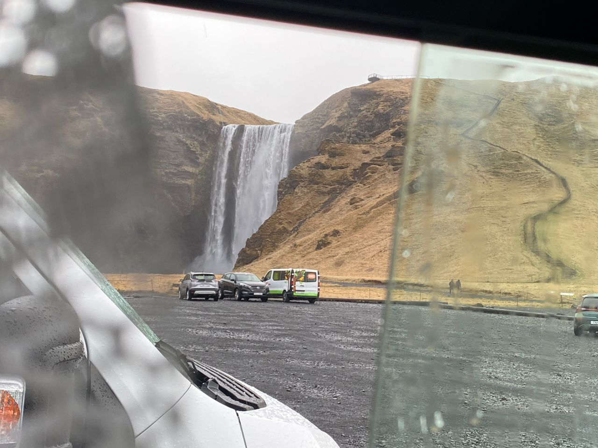

Real Story · 中文
窗外是著名的 Skógafoss。
27 April 2024，我 overnight at Skógar Campsite。 第二天早上，窗外就是著名的 Skógafoss。
这种感觉很 unreal。 在很多地方，waterfall 是一个需要特地 drive 去、walk 去、排队看的景点。 可是在这一晚之后，我从 Toyotaki 里面看出去， Skógafoss 就在那里。

Little Hike
I did the little hike on 28/4 morning.
28 April morning，我 did the little hike。 Iceland 的 hike 有一种很直接的感觉： 风景很大，路很简单， 但是每一步都在提醒你，天气和地形才是真正的主人。
走在 Skógafoss 附近， 瀑布的声音、风、湿气和冷空气都混在一起。 这不是 postcard 里面安静的 waterfall， 是一个真的会让你身体感受到的地方。
Black Beach
The Black Beach — 有 CCTV，不敢拿沙和小石子。
后来去了 Black Beach。 那里的黑沙和小石子很特别， 但是有 CCTV， 所以不敢拿沙和小石子走。
旅行到这些地方，有时候会很想带一点点自然的东西回家。 但是真正的 respect 是： 看见、记住、拍下来， 然后让它继续留在原来的地方。
English Memory Summary
A waterfall outside the window, and a beach left untouched.
On 27 April 2024, Tuzi overnighted at Skógar Campsite. The next morning, the famous Skógafoss waterfall was visible outside Toyotaki’s window. She did a small morning hike on 28 April, experiencing the waterfall not just as a view, but as sound, wind, mist, and cold air.
Later, at the Black Beach, the sand and small stones were tempting to keep as souvenirs. But with CCTV present — and with respect for the place — nothing was taken away.
Heart Statement
有些东西带不走，才是它最美的原因。
Skógafoss could be seen from Toyotaki’s window, and the black stones could be held for a moment. But Iceland kept reminding me: the best souvenirs are sometimes the ones left behind.